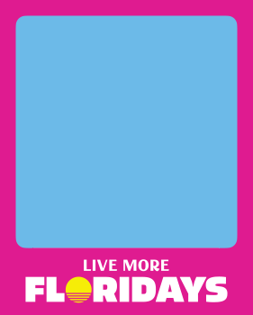
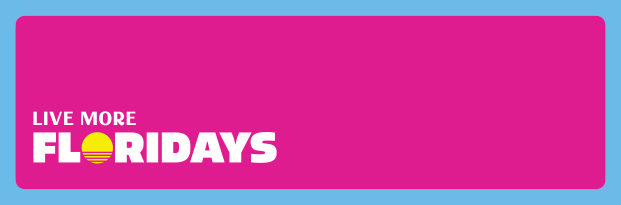

BRAND
GUIDELINES
& LOGOS
QUICK NAVIGATION
BRAND
VOICE
THE SUNSHINE GUIDE
Florida isn't just a destination, it's an open invitation to live in a sunkissed state of mind - to indulge in what you love and feel comfortable trying something new and Live More Floridays.
Our tone is warm and welcoming, just like the Florida sun. We radiate the kind of optimism that makes the expansiveness of the state feel accessible and brimming with possibility. Our voice strikes the right balance of welcoming, adventurous, knowledgeable and charismatic in a way that builds trust, brings inspiration and fosters real connections with potential visitors.
FONTS &
USAGE
The headlines use a friendly, attention grabbing font called Allotrope.
In order to maintain proper hierarchy, headlines should always be larger than subheads, and subheads should be larger than body copy.
ABCDEFGHIJKLMNOPQRSTUVWXYZ abcdefghijklmnopqrstuvwxyz 0123456789!@#$%^&*()[]?+
ABCDEFGHIJKLMNOPQRSTUVWXYZ abcdefghijklmnopqrstuvwxyz 0123456789!@#$%^&*()[]?+
ABCDEFGHIJKLMNOPQRSTUVWXYZ abcdefghijklmnopqrstuvwxyz 0123456789!@#$%^&*()[]?+
ABCDEFGHIJKLMNOPQRSTUVWXYZ 0123456789!@#$%^&*()[]?+
TYPOGRAPHY COLOR PAIRINGS
Shown here are approved typography and background color combinations for maximum legibility.
Always use white text over images or video backgrounds. Ensure that all background imagery provides sufficient contrast for text legibility. Images may need to be adjusted
(e.g., darkened or blurred) to meet accessibility and readability standards.


HEADLINE
PLACEMENT
Headline typography is meant to make a statement; it's big, bold, and graphic.
It should ideally take up 30% of the total image area, but can vary slightly based on size and headline length. Headlines can weave behind or atop imagery. The preferred alignment is left-aligned on the left side of the compositions.
Headlines should be in all-caps and the same size. Utilizing multiple font sizes in one headline should be avoided where possible. Headlines are often stacked and narrow. To achieve this, the number of words per line should be less than four.


COLOR
PALETTE
The Live More Floridays color palette is bold, tropical, and vibrant - perfectly tuned for Florida.
From saturated sunsets to crystal-clear waters and lush greenery, it captures the full spectrum of Florida's natural beauty.
Together, these colors bring the spirit of Florida to life - sunny, lively, and endlessly colorful.

COLOR PALETTE
APPLICATION
Shown here are examples of how the color palette can come to life in creative tactics.
Imagery with natural tones reflecting the brand palette is preferred, in order to complement and strengthen the color system.


COLOR PAIRING
STRATEGIES
There are two primary strategies for color pairing. Both methods can effectively support the brand, and the choice should depend on the desired tone and visual impact of the execution in relation to surrounding visuals.


SEASONAL
COLOR USAGE
Color should be thoughtfully applied with attention to both season timing and geographic relevance. The final materials should evoke the mood and atmosphere Florida provides during that time.
The full brand color palette can be used year-round across all markets and seasonal color combinations are illustrated here.


VISIT FLORIDA
LOGO
This is the VISIT FLORIDA brand logo. The preferred logo colors are Bougainvillea and White Sand, but other colors from the palette may be used for variation. There are two variations of this logo, the Primary Logo and the Small Use Case logo.
The Small Use Case logo is to be used when the format dictates smaller scales and should only appear between 110px wide and 220px wide in digital applications and 1.5" and .75" wide in print applications. All VISIT FLORIDA logos are not to be used below .75" wide.
The Small Use Case logo is primarily reserved for applications such as small scale banner ads and social media. Printed application formats will determine logo size based on inches.
PRIMARY LOGO
SMALL USE CASE LOGO
VISIT FLORIDA LOGO CLEAR SPACE
Clear space is the minimum distance between the logo and other visual and written elements.
The logo's clear space is equidistant to the height of the VISIT FLORIDA logo and applied all four sides of the logo.
PRIMARY LOGO
SMALL USE CASE LOGO
LOGO COLOR
+ CONTRAST
The examples shown here are preferred color combinations for the VISIT FLORIDA logo.
In most applications, the logo will be used in white sand on image or colored background. If a lighter background is needed, the Bougainvillea or Ocean blue can be used to provide sufficient contrast while staying within the brand palette.
INCORRECT
USAGE
Consistent use of the VISIT FLORIDA logo is key to maintaining brand recognition and visual integrity.
Avoid the following to make sure the brand logo remains clear, legible and instantly recognizable.
DO NOT Stretch The Logo
DO NOT Rotate The Logo
DO NOT Outline The Logo
DO NOT Modify The Placement Of Logo Parts
DO NOT Apply A Harsh Drop Shadow To The Logo
DO NOT Remove Parts Of The Logo
DO NOT Apply An Approved Color To The Logo
DO NOT Apply A Gradient To The Logo
DO NOT Resize Parts Of The Logo
VISIT FLORIDA
LOGO +
PARTNER LOGO
The Partner Logo lockups emphasize that VISIT FLORIDA and our partners are equal in collaboration.
When oriented vertically, the Partner Logo sits below the VISIT FLORIDA logo and is centered by the primary element(s) of the logo. Secondary elements like the trademark and copyright symbols should not be considered in centering the logo.
VERTICAL ORIENTATION
HORIZONTAL ORIENTATION
VERTICAL ORIENTATION | SMALL USE CASE
HORIZONTAL ORIENTATION | SMALL USE CASE
Maximum Size:
Digital: 220px Wide | Print: 1.5" Wide
Minimum Size:
Digital: 110px Wide | Print: .75" Wide
VISIT FLORIDA LOGO + PARTNER LOGO CLEAR SPACE
As with the primary logo, the Partner Logo should be large enough that it is clearly legible and in a space that is clear of other graphics.
The primary element(s) of the partner logo should be made the same height as the VISIT FLORIDA logo.
The logos clear space is equidistant to the height of the VISIT FLORIDA logo and applied to all four sides of the combined logo lockup.
Please note that the padding highlighted in blue in the standard use case logo lockup is split equally between one square.
VERTICAL ORIENTATION
VERTICAL ORIENTATION | SMALL USE CASE
HORIZONTAL ORIENTATION
HORIZONTAL ORIENTATION | SMALL USE CASE
VISIT FLORIDA
LOGO +
PARTNER LOGO
INCORRECT USAGE
It is important that our brand is accurately and consistently represented. The logo should not be altered in any way other than the size of the partner's logo.
These rules apply to both the vertical and horizontal versions.
ORDER OF THE LOGOS
LENGTH OF THE DIVIDING LINE
SPACE AROUND THE LOGOS
CAMPAIGN MARK
The Live More Floridays mark is bold and represents the feeling of our campaign. Variations are available to ensure flexibility across marketing materials and design layouts.
The primary mark has iconic graphics to represent the Sunshine State.
PRIMARY CAMPAIGN MARK
This text-only version of the campaign mark is provided for applications where the design layout has competing visual elements that require larger legibility.
SECONDARY CAMPAIGN MARK
SMALL USE CASE
Maximum Size:
Digital: 220px Wide | Print: 1.5" Wide
Minimum Size:
Digital: 110px Wide | Print: .75" Wide
Minimum Size:
Digital: 220px Wide | Print: 1.5" Wide
Minimum Size:
Digital: 110px Wide | Print: .75" Wide
MARK
ALIGNMENT
Partner color options are also available for the "Live More Floridays" campaign mark. Center-aligned marks should always be shown centered in layout and left-aligned marks should always be shown on the left side in design layouts.
CENTERED
LEFT ALIGNED


CENTER-ALIGNED MARK PLACEMENT
Centered marks should always be shown centered in layout. Centered mark should never be shown on the left side in layout.
LEFT-ALIGNED MARK PLACEMENT
Left-aligned marks should always be shown on the left side in layout. Left-aligned marks should never be shown centered in layout.
PRIMARY
COLOR
White sand is the primary color and should be used on colored backgrounds and imagery for maximum contrast.
If the campaign mark is to be used on white or a lighter background, the secondary Ocean Blue color should be used to ensure legibility.
If one color is required, please use the approved one-color version.
MARK PRIMARY COLOR


MARK SECONDARY COLOR
INCORRECT
USAGE
It is important that the campaign mark is consistently represented. The mark should not be altered in any way.
GRAPHIC
ASSETS
LOCATION MAP
The VISIT FLORIDA brand includes two approved color variations of the primary Florida map: Bougainvillea and White Sand.
Both versions are designed for flexible use across multiple mediums, including video, social, web and digital layouts. The inverted Florida map can be used on top of both color and imagery provided there is sufficient contrast for legibility. The map can be used at both large and small scales with a recommended smallest scale of 50x50px.
When using the brand map, always ensure that Lake Okeechobee and the Florida Keys are included, as these are essential geographic identifiers that maintain visual consistency.
Use only approved versions and avoid altering the map's proportions, features, or color treatments outside of the brand colors and imagery.
PRIMARY FLORIDA MAP

INVERTED FLORIDA MAP

REGIONAL LOCATION MAP
The VISIT FLORIDA brand includes two regional location map styles: single-color and multicolor.
Both versions are available to support a variety of use cases.
SINGLE-COLOR REGIONAL MAP
Designed for clarity and versatility, the single color regional map is best suited for web applications, particularly where interactive or functional use is required (e.g., hover states).
MULTI-COLOR REGIONAL MAP
This version offers a more illustrative and visually engaging representation of Florida's regions. It is appropriate for use across web, social media, and print, where a more expressive or branded aesthetic is desired.
Use maps consistently and according to context, ensuring they align with the intended purpose and overall visual tone of the campaign or platform.
SINGLE-COLOR REGIONAL MAP

MULTI-COLOR REGIONAL MAP

MULTI-COLOR REGIONAL MAP COLOR PALETTE
The VISIT FLORIDA multi-color regional map incorporates a range of approved supplemental colors designed to complement the primary brand palette within this specific graphic.
These tones are lighter variations derived from the core brand colors and are used to create visual balance within these combined colors.
These secondary colors are exclusive to the regional map and should not be used elsewhere.
All other design applications must rely strictly on the primary brand color palette.

LOCATION MAP CONTINUED
When using the Florida map, there may be occasions when specific regions or cities need to be highlighted or called out. The Flagua brand color should be used to emphasize regions and the Solar Flare brand color should be used to mark city locations with pins.
For city callouts, the connecting stroke between the label and the corresponding pin should be reversed out for maximum legibility.
This approach ensures the stroke remains clearly visible against both the map and any background elements. To maintain visual consistency and brand integrity, no other colors should be used for map highlights or annotations.
REGIONAL MAP HIGHLIGHT

CITY LOCATION CALLOUT

LOCATION PIN
The Location Pin is a supporting visual element designed to identify specific destinations or cities in Florida.
The pin must always be placed in context, either over a map or image, to reinforce geographic relevance. It should never be used as a standalone graphic or decorative icon.
The pin is not intended to function as a primary graphic or logo. It should never be enlarged disproportionately, used in isolation, or treated as a hero element.
The location pin must appear in Solar Flare, the primary brand color. When legibility requires, White Sand may be used as an alternate. The minimum size of the pin can be used at 8x12px.
The pin should complement the design without distracting from primary messaging or photography. It should feel integrated, understated, and purposeful.

Spacing of the location and pin on image should equal width of the exterior border.

Typography should be 75% of the height of the pin, centered horizontally with the pin.